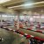
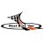
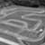
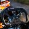
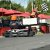

1707 Gare
| Data | Circuito | Modello di kart | ||||
|---|---|---|---|---|---|---|
| S | 01/07/2026 | ON TRACK KARTING WALLINGFORD WALLINGFORD | SODI GT5-R GX 200cc | |||
| S | 01/07/2026 | Bushiri Karting Speedway Oranjestad | SODI RT10 GX 270cc | |||
| S | 01/07/2026 | Bushiri Karting Speedway Oranjestad | SODI RT10 GX 270cc | |||
| S | 01/07/2026 | Bushiri Karting Speedway Oranjestad | SODI RT10 GX 270cc | |||
| S | 01/07/2026 | Bushiri Karting Speedway Oranjestad | SODI RT10 GX 270cc | |||
| S | 01/07/2026 | LIEGE KARTING Grivegnéee | SODI SR5 GX 270cc | |||
| S | 01/07/2026 | LIEGE KARTING Grivegnéee | SODI SR5 GX 270cc | |||
| S | 01/07/2026 | LIEGE KARTING Grivegnéee | SODI SR5 GX 270cc | |||
| S | 01/07/2026 |  | Kart&Go Montano Lucino | SODI SR4 GX 270cc | ||
| S | 01/07/2026 | SH Karting St-Charles Sur Richelieu | SODI SPORT Honda GX 390cc | |||
| S | 01/07/2026 | SH Karting St-Charles Sur Richelieu | SODI SPORT Honda GX 390cc | |||
| S | 01/07/2026 | SH Karting St-Charles Sur Richelieu | SODI SPORT Honda GX 390cc | |||
| S | 01/07/2026 | SH Karting St-Charles Sur Richelieu | SODI SPORT Honda GX 390cc | |||
| S | 01/07/2026 |  | First Kart 'Inn - FKI Machelen | SODI SR5 GX 270cc | ||
| S | 01/07/2026 | First Kart 'Inn - FKI Machelen | SODI SR5 GX 270cc | |||
| S | 01/07/2026 | First Kart 'Inn - FKI Machelen | SODI SR5 GX 270cc | |||
| S | 01/07/2026 |  | Ligue Karting Saguenay Chicoutimi | SODI GT4-R GX 270cc | ||
| S | 01/07/2026 |  | RULLITIS Jelgava | SODI SR4 GX 270cc | ||
| S | 01/07/2026 | NEED FOR SPEED KYIV | SODI SR4 GX 270cc | |||
| S | 01/07/2026 |  | Lakeside Karting Essex | SODI SR5 GX 390cc LPG |